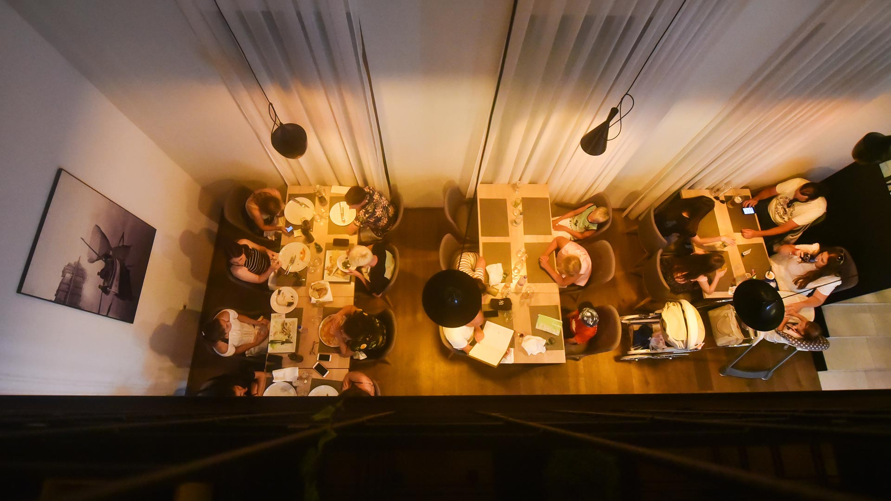

Naša Priča
Kako je sve počelo
2 Ribara je osnovan 1976. godine kao mali obiteljski restoran s jednom jednostavnom idejom: poslužiti najsvježu ribu direktno s Jadranskog mora. Tijekom pet decenija, čuvali smo tradiciju autentične dalmatinske kuhinje, koristeći lokalne namirnice i iste recepte koje je koristila naša obitelj od samih početaka.
Naša Misija
Kao tradicionalni dalmatinski restoran, naša misija je čuvati autentičnost i naslijede lokalne kuhinje. Svako jelo je pripravljeno s ljubavlju, koristeći samo tradicionalne dalmatinske recepte kako su se koristili prije 50 godina.
Naš Tim
Naš tim čine članovi iste obitelji koja je započela s snom 1976. godine. Kuvari s višedecenijskim iskustvom, koji znaju svaku ribu, svaki morski plod i svaki recept kao svoje dlane - tradicija se prenosi s koljena na koljeno.
Naši Principi
- Svježina Mora: Riba se donosi svakodnevno od lokalnih ribičara - direktno s Jadrana
- Autentičnost: Koristimo samo tradicionalne dalmatinske recepte kako su se koristili 50 godina
- Obiteljska Tradicija: Svako jelo je pripremljeno po obiteljskim receptima prenešenim kroz generacije
- Gostoprimstvo: Svaki gost je dio naše obitelji - služimo s srcem i toplinom
- Ponos: Ponos je naša motivacija - ponos u svakom jelu, svakom dobavljaču, svakom gostu
Radno vrijeme
Želite nas posjetiti?
Pozovi nas ili popuni rezervacijski formular na stranici Kontakt.
Napravite RezervacijuNaš Restoran Kroz Vrijeme


